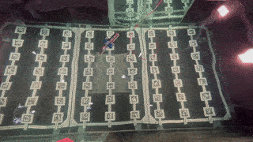

2.6. Deploying HippoCampus
Todo
Rework for ROS2 needed.
2.6.1. Start-Everyting-Check-List
Push Buttons
ssh pi@buttons-00.localReplace the vehicle name with the one of the vehicle we are actually using.
ros2 launch buttons button_1.launch.py vehicle_name:=uuv02
We can detach the session with F6, since we do not have to interact with it anymore.
Start the onboard nodes
ssh pi@hippo-main-02.localWe run at least two nodes: the
esc_commanderandmicro-rosros2 run micro_ros_agent micro_ros_agent serial --dev /dev/fcu_data -b 921600
Open a new termianl window with F2 (switch between them with F3 and F4).
ros2 run esc esc_commander_node --ros-args -r __ns:=/uuv02
Open a new terminal once more and start the debug session for the FCU.
screen /dev/fcu_debug 57600
We use this session to either reboot the vehicle by entering
reboot(it does not matter if there are messages popping up while entering this) or to reset the state estimtion by enteringekf2 stopandekf2 start.We leave this session by hitting Ctrl + A followed by k. You have to confirm quitting the session by hitting y.
Launch the Qualisys MoCap-Bridge and replace the vehicle name so it matches our used vehicle.
ros2 launch qualisys_bridge qualisys_bridge.launch.py vehicle_name:=uuv02
Note
Make sure to use the correct IP address of the computer running the Qualisys Tracking Manager in the config file inside the
qualisys_bridgepackage. Check the address for the network interface, that connect the computer with the local network (not the one used to connect the cameras).Launch the specific setup we want to run, for example
ros2 launch hippo_control top_motor_failure_intra_process.launch.py vehicle_name:=uuv02 use_sim_time:=false
For this specific launch setup also run the following command to set the desired thrust to non-zero value
ros2 topic pub -r 50 /uuv02/thrust_setpoint hippo_msgs/msg/ActuatorSetpoint 'x: 3.0'
Use the the green and red push button to arm/disarm the vehicle.
Attention
Always keep an eye on the battery level. There is a indicator light connected to the Raspberry Pi controlloing the buttons. Besides, the esc_commander node also publishes the battery voltage measured by the ESCs under /uuv02/battery_voltage. Make sure to not discharge the battery below 3.5V (it is okay to have short voltage drops under heavy load until 3.3V) per cell. Otherwise tell Lennart and/or Nathalie about it.
2.6.2. Shutting-Down-Check-List
Note
In general, please shutdown every Raspberry Pi with sudo shutdown 0 before disconnecting any power supply.
Shutdown at least all battery powered Raspberry Pis (usually this means the one inside the vehicle) with
sudo shutdown 0(make sure you run this command on the Pi and not on your own device by accident).Disconnect all batteries and use the battery charger to charge the battery to storage voltage if you will not reuse it immediately.
If you have any batteries left that are not charged to storage voltage after your experiments are done, charge them to storage voltage. Do not store them at a voltage level above or below it.
2.6.3. Final Steps
Look! It’s running just perfectly fine without any trial and error.
{kind=link}